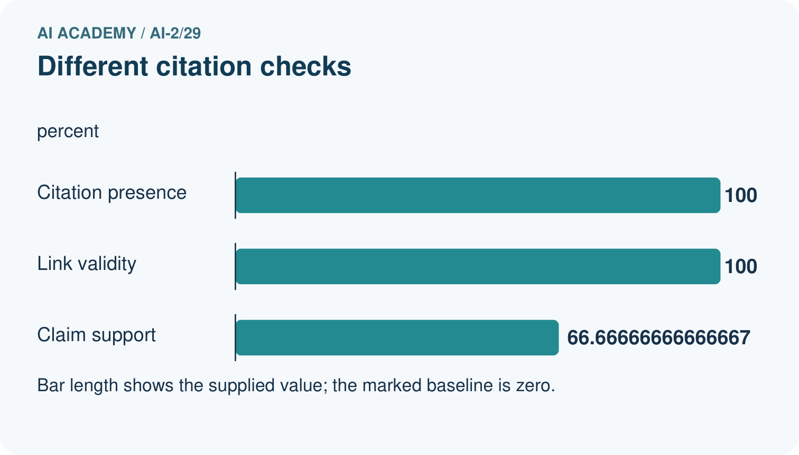
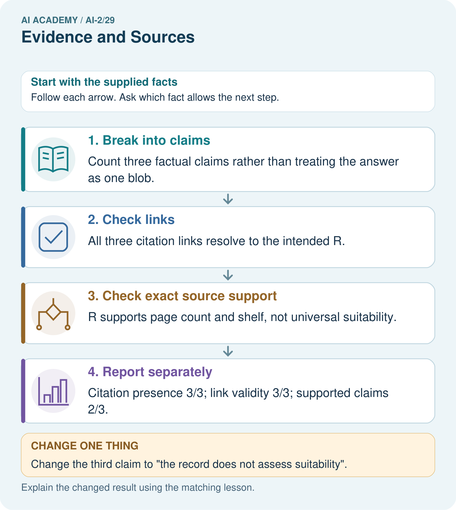

AI Academy · Level 2 · Grade 7 · Week 29 · Workbook
Evidence and Sources
Learn to understand, design, build, test and explain AI systems responsibly.
Project: Transparent Book Recommender
Workbook · 1 of 19
Recall and choose your starting point
Try the recall before opening notes. Then use a different colour or a labelled second line to correct your explanation.
Prompt Experiments
Without opening the old lesson, explain one key idea from Prompt Experiments. Give an example and a mistake that the idea helps you avoid.
Image and Voice Pipelines
Without opening the old lesson, explain one key idea from Image and Voice Pipelines. Give an example and a mistake that the idea helps you avoid.
Recommendation Scores
Without opening the old lesson, explain one key idea from Recommendation Scores. Give an example and a mistake that the idea helps you avoid.
Workbook · 2 of 19
Practise with fading help
Use W2: Trace the worked case for Claim support and citation evaluation. Record the answer once; the lesson and workbook refer to the same attempt.
| Given inputs | Procedure I chose | Middle steps | Result and check |
|---|---|---|---|
Workbook · 3 of 19
Individual reasoning check
Use the worked case for Claim support and citation evaluation. Proposed explanation: “The worked result establishes every future case”. Decide whether this explanation is supported. Point to the step or supplied fact that decides; explain your repair if needed.
Workbook · 4 of 19
Independent transfer case
Independent case: Apply a new case independently
Five claims; four cited; three supported by cited passages; one cited ID is nonexistent. Compute support and citation presence and explain link limits.
Attempt this case before feedback. Record any help. Earlier examples below are further practice; a case already practised with feedback cannot establish fresh transfer.
Workbook · 5 of 19
Your learning target
Two catalogue records list 96 and 112 pages for a title. A helper averages them and reports 104. Explain the mistake and a better verification process.
Workbook · 6 of 19
Solve the given case
An answer says 80 pages, but the catalogue for that edition says 120.
What evidence guides correction?
Show your trace, calculation or evidence
Workbook · 7 of 19
Check a changed case
An answer cites a page about opening hours to support a claim about book prices. Is a citation enough? What must be checked?
My independent answer and reason
Week 29 Test and reflect
Workbook · 8 of 19
Design a revealing test
Create a changed input, boundary case or missing-information case. Write the expected answer or safe response before testing.
| Test record | My evidence |
|---|---|
| Changed input or condition | |
| Expected answer or fallback | |
| Observed result | |
| Why the result occurred |
Workbook · 9 of 19
Project checkpoint
Separate profile-based ranking evidence from factual book information and cite the latter.
The project change and evidence I will keep
Workbook · 10 of 19
Self check
I can explain the mechanism. I can show evidence. I can handle a changed case. I can name a limit. Mark each as not yet, with help or independently, and attach supporting work.
Teacher review ____________________ Next step ____________________
Workbook · 11 of 19
Transfer practice from the original programme
Two catalogue records list 96 and 112 pages for a title. A helper averages them and reports 104. Explain the mistake and a better verification process.
Record support used: none, hint or teacher explanation.
Workbook · 12 of 19
W1 Explain the mechanism
Explain the weekly mechanism in your own words. Use the worked scenario to name its input, decision rule and output.
Workbook · 13 of 19
W2 Trace the worked case
An answer has four factual claims. Three have citations, but only two are supported by their cited passages. All links exist. Show the intermediate steps and give the conclusion with its scope.
Workbook · 14 of 19
W3 Audit the limit
A report omits this qualification: Citation counts do not establish truth beyond the supplied sources or the correctness of uncited claims. Explain how omitting it could change a reader's interpretation, and write an accurate replacement.
Workbook · 15 of 19
W4 Apply a new case independently
Five claims; four cited; three supported by cited passages; one cited ID is nonexistent. Compute support and citation presence and explain link limits.
Workbook · 16 of 19
W5 Design a revealing follow-up
For the worked scenario, propose one additional case that could reveal a failure, describe its expected outcome before running it, and explain what would need to remain fixed for a fair comparison. Do not reuse W4 as a new final test after receiving feedback.
Workbook · 17 of 19
Feedback, return check and learning record
| Evidence | My record |
|---|---|
| Worked alone / hint / model | |
| First step I repaired and why | |
| New case checked later; date and result | |
| What I can now explain without notes | |
| One remaining question |
Revisit this idea with your teacher after a delay. Familiarity is different from explaining and using it on a changed case.
Workbook · 18 of 19
Pictorial case practice: Evidence and Sources
A fictional catalogue answer contains three factual statements and cites existing records.
Record R: book Ocean Maps has 80 pages and is available on shelf 2.
Claims: 80 pages [R]; shelf 2 [R]; suitable for every child [R]. All three citations resolve to R.


Why is the original answer not fully supported despite having citations on every claim?
Support used: alone / hint / worked example. This record is practice evidence.
Project connection: Attach source IDs to recommender explanation facts and separately audit whether each source supports its precise statement.
Workbook · 19 of 19
Project portfolio milestone
Project: Transparent Book Recommender
Current milestone: Prepare the demonstration. Gather reproducible instructions, evidence, access checks and remaining limitations.
Attach source IDs to recommender explanation facts and separately audit whether each source supports its precise statement.
| Evidence to keep | My record |
|---|---|
| This week’s input and deciding step | |
| Prediction and actual result (or labelled paper trace) | |
| One change since the previous checkpoint and why | |
| One error or limit and the next test |